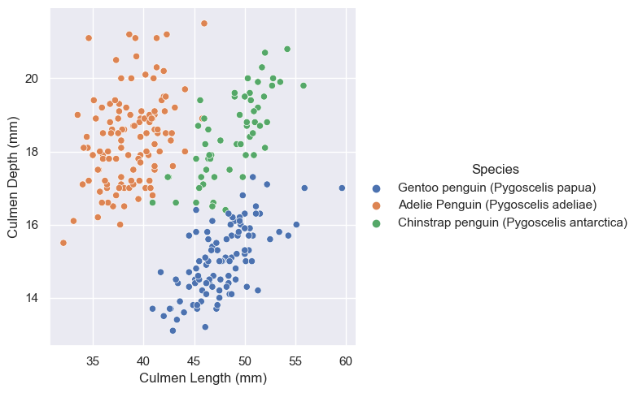
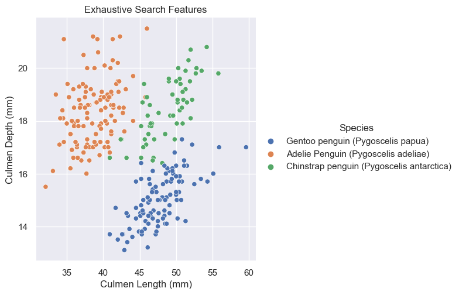
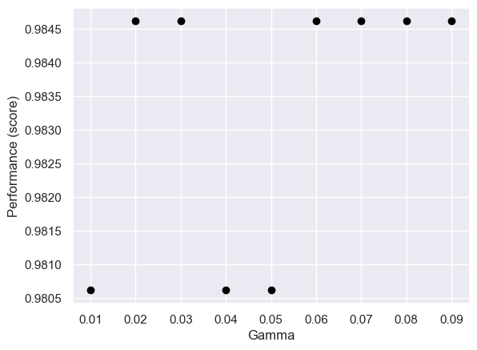

import pandas as pd
import numpy as np
from matplotlib import pyplot as plt
from sklearn.preprocessing import LabelEncoder
import warnings
warnings.filterwarnings('ignore')
# Load training data
train_url = "https://raw.githubusercontent.com/middlebury-csci-0451/CSCI-0451/main/data/palmer-penguins/train.csv"
train = pd.read_csv(train_url)
Classifying Palmer Penguins
In this blog post, we are going to go use a simplified, but standard machine learning workflow to determine the smallest number of features needed to confidently determine the species of a pengiun.
Download Training Data
First, we download our given training data.
Prepare Training Data
Next, we tidy up our data. We remove any columns that irrlevant to determining the species of a penguin and modify any qualitative features (e.g. sex, clutch completion, island), so that they are represented through numerical values, since strings are difficult to work with.
le = LabelEncoder()
le.fit(train["Species"])
"""
Prepare qualitative data and mark species as labels
"""
def prepare_data(df):
df = df.drop(["studyName", "Sample Number", "Individual ID", "Date Egg", "Comments", "Region"], axis = 1)
df = df[df["Sex"] != "."]
df = df.dropna()
y = le.transform(df["Species"])
df = df.drop(["Species"], axis = 1)
df = pd.get_dummies(df)
return df, y
# Prepare training data
X_train, y_train = prepare_data(train)Explore: Feature Selection
Now that we have prepared our training data, we want to figure our which three features of the data (two quantitative and one qualitative) will allow a model to achieve 100% testing accuracy when trained on those features.
The first way in which we tried to select these features was through the SelectKBest and f_classif functions in the sklearn.feature_selection package.
# Resource: https://www.datatechnotes.com/2021/02/seleckbest-feature-selection-example-in-python.html
from sklearn.feature_selection import SelectKBest, f_classif
all_qual_cols = ["Island_Biscoe", "Island_Dream", "Island_Torgersen", "Clutch Completion_No", "Clutch Completion_Yes", "Sex_FEMALE", "Sex_MALE"]
all_quant_cols = ['Culmen Length (mm)', 'Culmen Depth (mm)', 'Flipper Length (mm)', 'Body Mass (g)']
# Pick quantatative features
X_quant = X_train[all_quant_cols]
quant_select = SelectKBest(f_classif, k=2).fit(X_quant, y_train)
mask = quant_select.get_support()
quant_names = X_quant.columns[mask]
# Pick qualatative features
X_qual = X_train[all_qual_cols]
qual_selected = SelectKBest(f_classif, k=3).fit(X_qual, y_train)
mask = qual_selected.get_support()
qual_names = X_qual.columns[mask]
features = np.concatenate((quant_names, qual_names))print(f"quant_names: {quant_names}")
print(f"qual_names: {qual_names}")
print(f"features: {features}")quant_names: Index(['Culmen Length (mm)', 'Flipper Length (mm)'], dtype='object')
qual_names: Index(['Island_Biscoe', 'Island_Dream', 'Island_Torgersen'], dtype='object')
features: ['Culmen Length (mm)' 'Flipper Length (mm)' 'Island_Biscoe' 'Island_Dream'
'Island_Torgersen']When we inspect the features SelectKBest selected based on the f_classif score function, we see that it found the quantative features of Culmen Length (mm) and Flipper Length (mm) and qualitative Island feature to be the best features for the training data.
Another way we could have selected features was through an exhaustive search that uses the combinations function from the itertools package. To guard ourselves from overfitting issues, we use cross validation throughout this process with Logistic Regression as our model.
from itertools import combinations
from sklearn.linear_model import LogisticRegression
from sklearn.model_selection import cross_val_score
all_qual_cols = ["Island", "Clutch", "Sex"]
all_quant_cols = ['Culmen Length (mm)', 'Culmen Depth (mm)', 'Flipper Length (mm)', 'Body Mass (g)']
# Create dataframe to better inspect the scores
pd.set_option('max_colwidth', 100)
scores_df = pd.DataFrame(columns=['Columns', 'Score'])
# Go through possible combinations of features and train model on them
# Using 1 qualitative and 2 quantiative
for qual in all_qual_cols:
qual_cols = [col for col in X_train.columns if qual in col ]
for pair in combinations(all_quant_cols, 2):
cols = list(pair) + qual_cols
# print(cols)
# Using logistic regression for modeling
LR = LogisticRegression()
# Incorportating cross validation?
cv_scores = cross_val_score(LR, X_train[cols], y_train, cv=10)
mean_score = cv_scores.mean()
scores_df = scores_df.append({'Columns': cols, 'Score': mean_score.round(3)}, ignore_index=True)
scores_df = scores_df.sort_values(by='Score', ascending=False).reset_index(drop=True)
features = scores_df.iloc[0,0]
features['Culmen Length (mm)',
'Culmen Depth (mm)',
'Island_Biscoe',
'Island_Dream',
'Island_Torgersen']By inspecting the features with the highest score that the exhaustive search, we see that it has the same qualitative feature selection of Island as our SelectKBest method, but different quanative feature selections. Here instead of the Flipper Length (mm) resulting in a higher score, it found Culmen Depth (mm) to be more promising.
To figure out whether Flipper Length (mm) and Culmen Length or Culmen Depth (mm) and Culmen Length is more promising, let’s inspect what they look like when graphed.
import seaborn as sns
sns.set_theme()
sns.relplot(
data=train,
x="Culmen Length (mm)", y="Culmen Depth (mm)", hue="Species"
)
sns.relplot(
data=train,
x="Culmen Length (mm)", y='Flipper Length (mm)', hue="Species"
)<seaborn.axisgrid.FacetGrid at 0x14c08df40>

Based on these graphs, it looks like Culmen Depth and Culmen Length may be the better quantative options for they look more separated.
Explore: Modeling
from mlxtend.plotting import plot_decision_regions
from sklearn.linear_model import LogisticRegression
from matplotlib import pyplot as plt
import numpy as np
def decision_region_panel(X, y, model, qual_features):
p = len(qual_features)
fig, axarr = plt.subplots(1, p, figsize=(4*p,4))
for i in range(p):
filler_feature_values = {2+j: 0 for j in range(p)}
filler_feature_values.update({2+i: 1})
ix = X[qual_features[i]] == 1
ax = axarr[i]
# print(f"{X[ix]=}")
plot_decision_regions(np.array(X[ix]), y[ix], clf=model,
filler_feature_values=filler_feature_values,
filler_feature_ranges={2+j: 0.1 for j in range(p)},
legend=2, ax=ax)
ax.set_xlabel(X.columns[0])
ax.set_ylabel(X.columns[1])
handles, labels = ax.get_legend_handles_labels()
ax.legend(handles,
["Adelie", "Chinstrap", "Gentoo"],
framealpha=0.3, scatterpoints=1)
# Adding axes annotations
fig.suptitle(f'Accuracy = {model.score(X, y).round(3)}')
plt.tight_layout()
plt.show()DecisionTreeClassifier
#FIND MAX DEPTH OF TREE
from sklearn.model_selection import cross_val_score
from sklearn.tree import DecisionTreeClassifier
fig, ax = plt.subplots(1)
max_score = 0
best_depth = 0
for d in range(2, 10):
# USING DECISION TREE CLASSIFER
T = DecisionTreeClassifier(max_depth = d)
cv_mean = cross_val_score(T, X_train[features], y_train, cv = 10).mean()
ax.scatter(d, cv_mean, color = "black")
if cv_mean > max_score:
max_score = cv_mean
best_depth = d
labs = ax.set(xlabel = "Complexity (depth)", ylabel = "Performance (score)")
print(max_score, best_depth)
DTC = DecisionTreeClassifier(max_depth = best_depth)
DTC.fit(X_train[features], y_train)
# print(DTC.score(X_train[features], y_train))
print(f"features: {features}")
print(f"qual_names: {qual_names}")
decision_region_panel(X_train[features], y_train, DTC, qual_names)0.9767692307692307 3
features: ['Culmen Length (mm)', 'Culmen Depth (mm)', 'Island_Biscoe', 'Island_Dream', 'Island_Torgersen']
qual_names: Index(['Island_Biscoe', 'Island_Dream', 'Island_Torgersen'], dtype='object')

SVC
#FIND GAMMA
from sklearn.model_selection import cross_val_score
from sklearn.svm import SVC
fig, ax = plt.subplots(1)
max_score = 0
best_gamma = 0
for g in range(1, 10):
little_g = g / 100
# USING DECISION TREE CLASSIFER
svc = SVC(gamma = little_g, kernel = "rbf")
cv_mean = cross_val_score(svc, X_train[features], y_train, cv = 10).mean()
ax.scatter(little_g, cv_mean, color = "black")
if cv_mean > max_score:
max_score = cv_mean
best_gamma = little_g
labs = ax.set(xlabel = "Gamma", ylabel = "Performance (score)")
print(max_score, best_gamma)
svc = SVC(gamma = best_gamma)
svc.fit(X_train[features], y_train)
# print(svc.score(X_train[features], y_train))
# decision_region_panel(X_train[features], y_train, svc, qual_names)0.9846153846153847 0.02SVC(gamma=0.02)In a Jupyter environment, please rerun this cell to show the HTML representation or trust the notebook.
On GitHub, the HTML representation is unable to render, please try loading this page with nbviewer.org.
SVC(gamma=0.02)

LogisticRegression
LR = LogisticRegression()
LR.fit(X_train[features], y_train)
# print(LR.score(X_train[features], y_train))
print(f"features: {features}")
print(f"qual_names: {qual_names}")
decision_region_panel(X_train[features], y_train, LR, qual_names)features: ['Culmen Length (mm)', 'Culmen Depth (mm)', 'Island_Biscoe', 'Island_Dream', 'Island_Torgersen']
qual_names: Index(['Island_Biscoe', 'Island_Dream', 'Island_Torgersen'], dtype='object')
Testing
# TESTING
test_url = "https://raw.githubusercontent.com/middlebury-csci-0451/CSCI-0451/main/data/palmer-penguins/test.csv"
test = pd.read_csv(test_url)
X_test, y_test = prepare_data(test)print(DTC.score(X_test[features], y_test))
print(svc.score(X_test[features], y_test))
print(LR.score(X_test[features], y_test))
# YOU GET 100% TESTING ACCURACY WITH QUANTATIVE culmen length and culmen depth
# Show graphs0.9852941176470589
0.9411764705882353
1.0Results
NOT USING YET
from mlxtend.plotting import plot_decision_regions
# DTC = DecisionTreeClassifier(max_depth = best_depth)
# DTC.fit(np.array(X_train[features]), y_train)
def training_decision_regions(model, cols, **kwargs):
m = model(**kwargs)
m.fit(np.array(X_train[cols]), y_train)
plot_decision_regions(np.array(X_train[cols]), y_train, clf = m)
ax = plt.gca()
ax.set(xlabel = cols[0],
ylabel = cols[1],
title = f"Training accuracy = {m.score(np.array(X_train[cols]), y_train).round(2)}")
handles, labels = ax.get_legend_handles_labels()
ax.legend(handles,
species,
framealpha=0.3,
scatterpoints=1)
# training_decision_regions(DecisionTreeClassifier, features, max_depth = best_depth)# INSPECTING DATA
# print("BASE RATES")
# print("y_train:", y_train)
# print("species 0 count:", np.count_nonzero(y_train == 0), "percentage:", np.count_nonzero(y_train == 0)/np.size(y_train))
# print("species 1 count:", np.count_nonzero(y_train == 1), "percentage:", np.count_nonzero(y_train == 1)/np.size(y_train))
# print("species 2 count:", np.count_nonzero(y_train == 2), "percentage:", np.count_nonzero(y_train == 2)/np.size(y_train))
# WAIT SO IS OUR BASE RATE THE AVERAGE OF THESE?